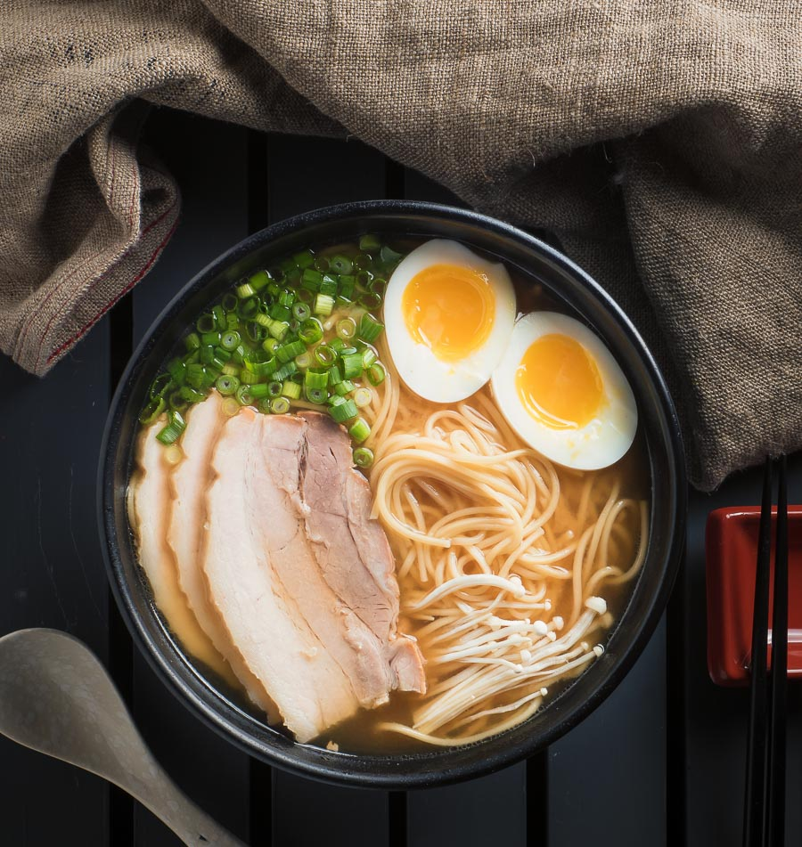

Ramen Recipe

Miso Pork Ramen Description
Miso pork ramen is a rich and savory Japanese noodle soup made with a miso-based broth,
tender slices of pork, and a variety of toppings such as solf-boiled egg, green onions,
and seaweed. The combination of umami flavors from the miso and pork creates a comforting
flavorfull dish.
The dish is often customized with different textures and flavors, including crunchy
bamboo shoots, sweet corn, or spicy chili paste, making each bowl uniqui, Miso pork ramen
is not only satisfying but also a well-balanced meal, in combining protien, vegetables, and
hearty noodles, perfect for warming up on a cold day.
Ingredients
- 4 cups chicken broth
- 2 tablespoons miso paste
- 200g pork (thinly slived)
- 2 servings ramen noodles
- 2 eggs (soft-boiled)
- 1/4 cup green onions (sliced)
- nori (seaweed) strips (optional)
Steps
- Prepare the broth:
- In a pot, bring the chicken broth to a simmer.
- stir the miso paste until dissolved completely
- Cook the pork:
- In a pan, cook the thinly sliced pork until browned and fully cooked.
- Boil the noodles:
- In another pot, cook the ramen noodles according to the pachage instructions.
- Drain the noodles and set them aside.
- Make soft-boiled eggs:
- boil the eggs for 6-7 minutes.
- cool in ice water, peel, and cut in half.
- Assemble the Ramen:
- Divide the cooked noodles into bowls
- Pour the hot broth over the noodles.
- Top with the cooked pork, sofl-boiled eggs, and sliced green onions.
- Add nori strips if desired